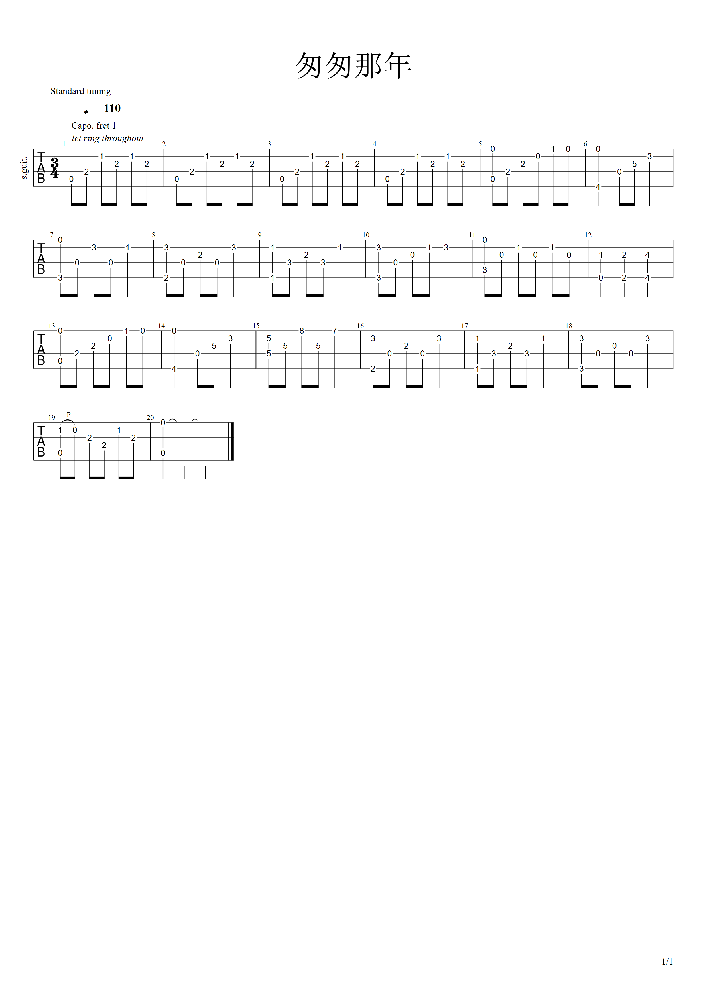

文章
11
标签
10
分类
3
首页
归档
标签
分类
列表
音乐
电影
链接
关于
yfsun2的个人博客
匆匆那年前奏
返回首页
首页
归档
标签
分类
列表
音乐
电影
链接
关于
匆匆那年前奏
发表于
2025-12-21
|
更新于
2025-12-21
|
吉他谱
|
浏览量:

文章作者:
yfsun2
文章链接:
https://blog.syfcode.xyz/2025/12/21/%E5%8C%86%E5%8C%86%E9%82%A3%E5%B9%B4%E5%89%8D%E5%A5%8F/
版权声明:
本博客所有文章除特别声明外，均采用
CC BY-NC-SA 4.0
许可协议。转载请注明来源
yfsun2的个人博客
！
匆匆那年
上一篇
传奇吉他谱
下一篇
故湘风前奏
yfsun2
输了你，赢了世界又如何
文章
11
标签
10
分类
3
关注我
公告
This is my Blog
最新文章
传奇吉他谱
2026-01-04
匆匆那年前奏
2025-12-21
故湘风前奏
2025-12-21
安和桥吉他谱
2025-12-20
枫吉他谱
2025-12-20
繁